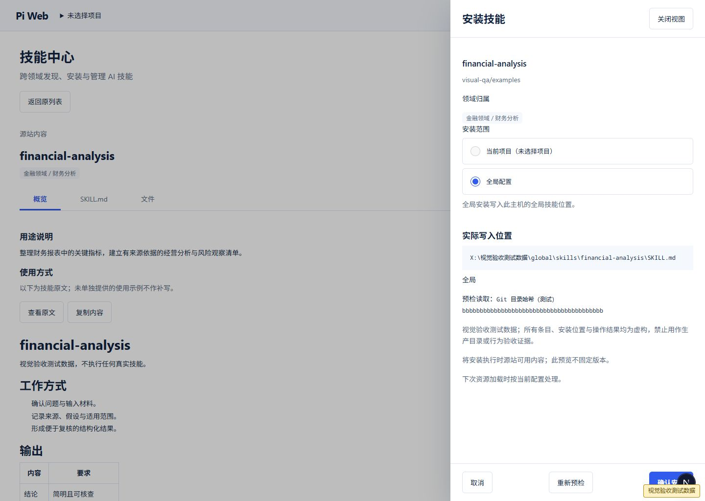
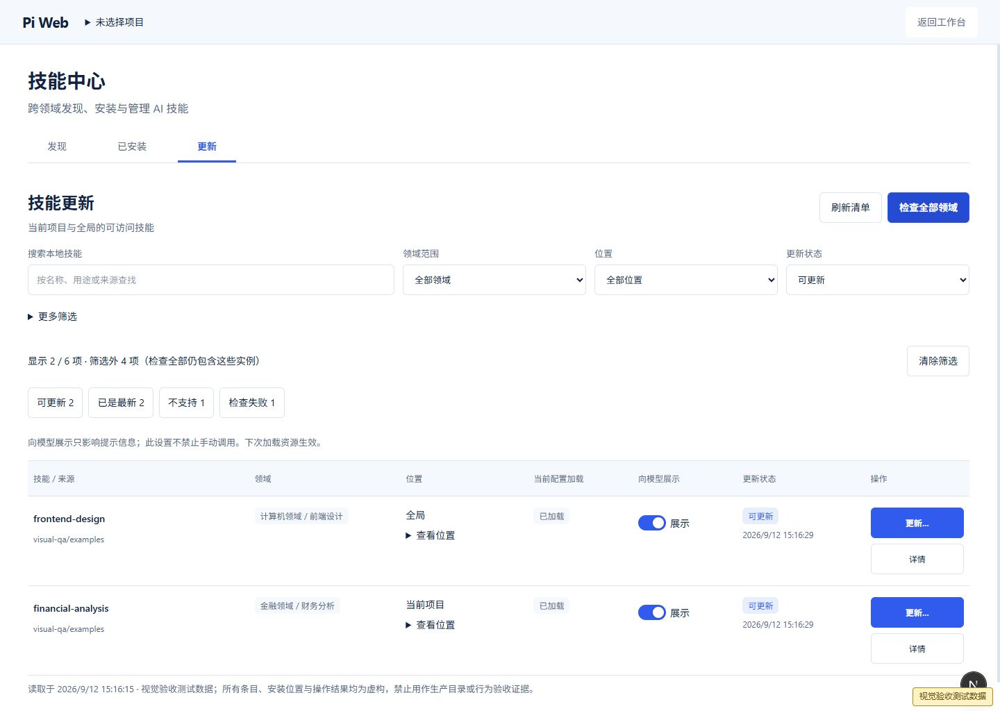
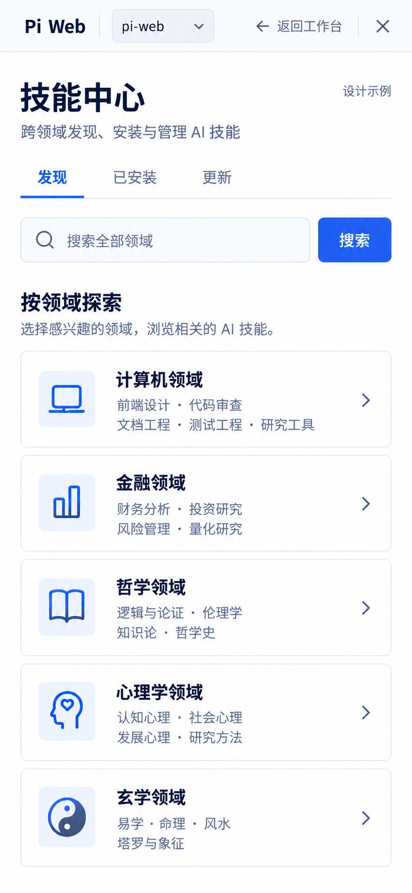
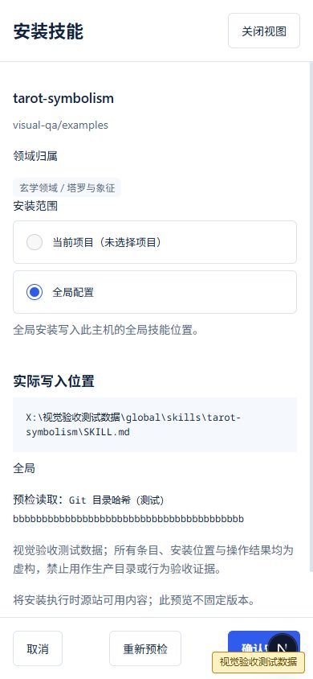

技能中心 · 设计与实现对比01 · 计算机领域
设计稿 · 1487 × 1058实现截图 · 65536 × 4292542531 · 视觉测试数据 03 · 安装确认
设计稿 · 1487 × 1058实现截图 · 65536 × 4292542531 · 视觉测试数据
05 · 更新
设计稿 · 1487 × 1058实现截图 · 65536 × 4292542531 · 视觉测试数据
06 · 手机领域总览
设计稿 · 853 × 1844
实现截图 · 65536 × 4292542531 · 视觉测试数据 07 · 手机安装
设计稿 · 853 × 1844实现截图 · 65536 × 4292542531 · 视觉测试数据
08 · 手机管理
设计稿 · 853 × 1844实现截图 · 65536 × 4292542531 · 视觉测试数据